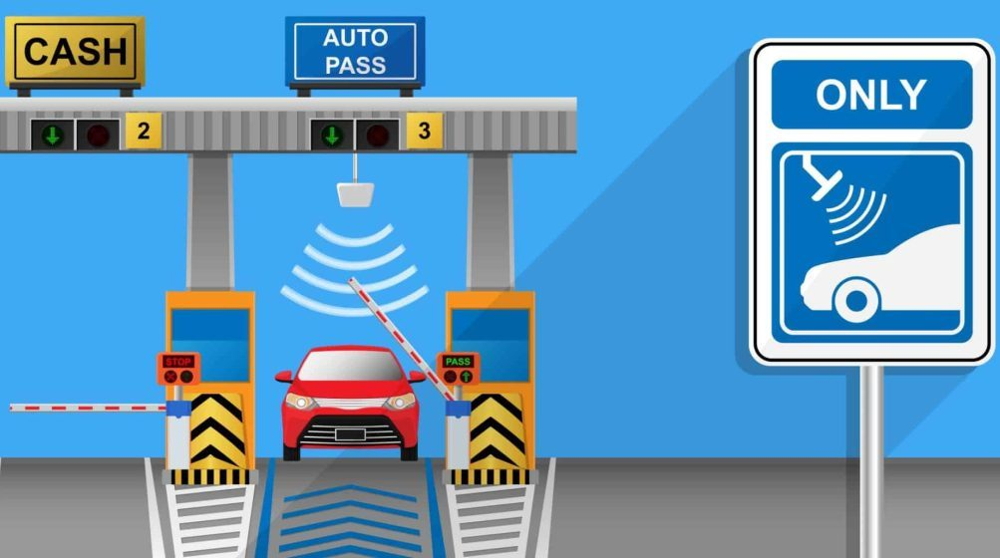

By ProPK Staff | Published Jul 31, 2023 | 3:34 pm
If you’re a frequent user of the motorway, an M-Tag can make your journeys smoother and more convenient
M-Tag was created by the National Highway Authority (NHA), allowing you to pass through toll plazas without stopping. This makes the flow of traffic and the toll collection process a lot quicker and easier.
n this article, we will guide you through the simple process of applying for an M-Tag, both through a physical booth and online.
To begin your M-Tag application process, find a nearby physical booth. These booths are typically situated near major toll plazas and service areas.
Ensure you have your original CNIC and a copy of your vehicle’s registration certificate. Without these, your application cannot be processed.
Once you get to the booth, fill out the application form accurately, providing your personal details, vehicle information, and contact information.
Submit your completed form along with the required documents to the booth attendant. They will review your application and verify the provided information.
Once your application is approved, you will be issued an M-Tag. The attendant will affix it to your windshield, and you’ll be ready to enjoy cashless toll payments.
You can check its status or recharge the balance via NHA’s One Network smartphone application.
It lets users easily manage their M-tag account, and check their balance, travel history, account, and vehicle details. The application also sends official notifications from the National Highway and Motorway Police (NHMP) regarding fog and diversion to the users.
Around the end of 2021, the Lahore High Court (LHC) ruled that all vehicles traveling from Lahore to Islamabad (M-2) motorway must display an M-tag. The authorities implemented the new rule by December 7, 2021.
In addition, the court ordered the NHMP to assure compliance by all vehicles. The court ordered NHMP to redirect vehicles lacking M-tags to GT Road.
If you want to join us in our mission to share independent, global journalism to the world, we’d love to have you on our side. If you can, please support us on a monthly basis. It takes less than a minute to set up, and you can rest assured that you’re making a big impact every single month in support of open, independent journalism. Thank you.